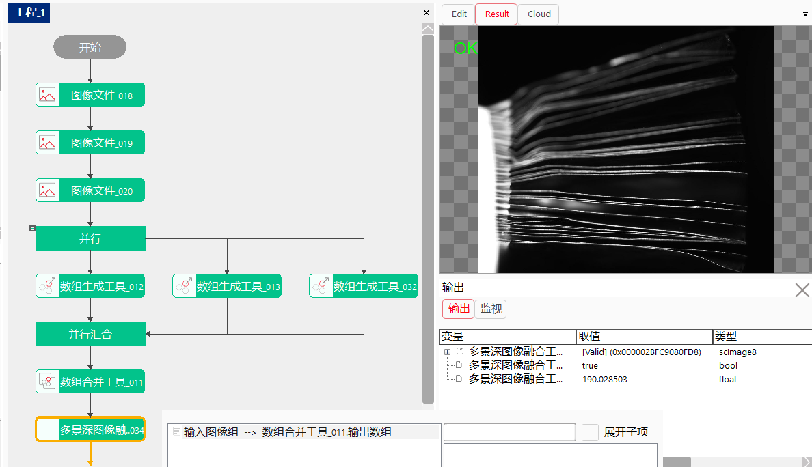

本工具所用算法是基于液态镜头的景深扩展技术研究项目开发的多帧图像大景深融合算法，适用于液态远心镜头连续调焦拍摄的多幅图像融合得到一幅大景深图像。
| 分类 | 参数名称 | 参数描述 |
|---|---|---|
| 属性窗口 | GPU加速 | 是否启用GPU加速，若为是，则会用GPU进行处理（机器中没有GPU时算法会弹窗报错），若为否，则用CPU进行处理。 |
| 采样倍数 | 1.0-8.0，建议4.0；该参数用表明加速倍数，数值越大计算时间越短，相应会牺牲一部分图像融合的细节。 | |
| 滤波半径一 | 3-31，建议5-13的奇数；改参数表明图像滤波细节，数值越小细节保留越多，该参数几乎不影响计算时间。 | |
| 滤波半径二 | 3-31，建议5-13的奇数；改参数表明不同图像融合的边缘细节，数值越小图像过渡区域越小，可能会出现跳变，数值越大过渡区域越大，容易模糊，该参数几乎不影响计算时间。 | |
| 正则化系数 | 避免0值图像导致计算异常，通常可以选取0.001*（最大值-最小值）=0.2~0.3。 | |
| 数据链 | 输入图像组 | 2-10幅的图像数组（目前只支持灰度图），依据实际需要的图像张数来设置，数量越多计算时间越长。 |
| 参数名称 | 参数说明 |
|---|---|
| 输出图像 | 输出融合后的图像。 |
| 执行结果 | 工具执行结果。 |
| 执行时间 | 工具执行时间。 |
使用时如下图所示，可以使用数组合并工具来收集多个图像文件(或者图像源采集到的)中的图像数据，数组合并工具数据类型选择scImage8，之后将数据合并工具的输出数组参数链接到多景深图像融合工具中输入图像组参数链中即可。 
参见“\Samples\多景深图像融合工具.gvp”。